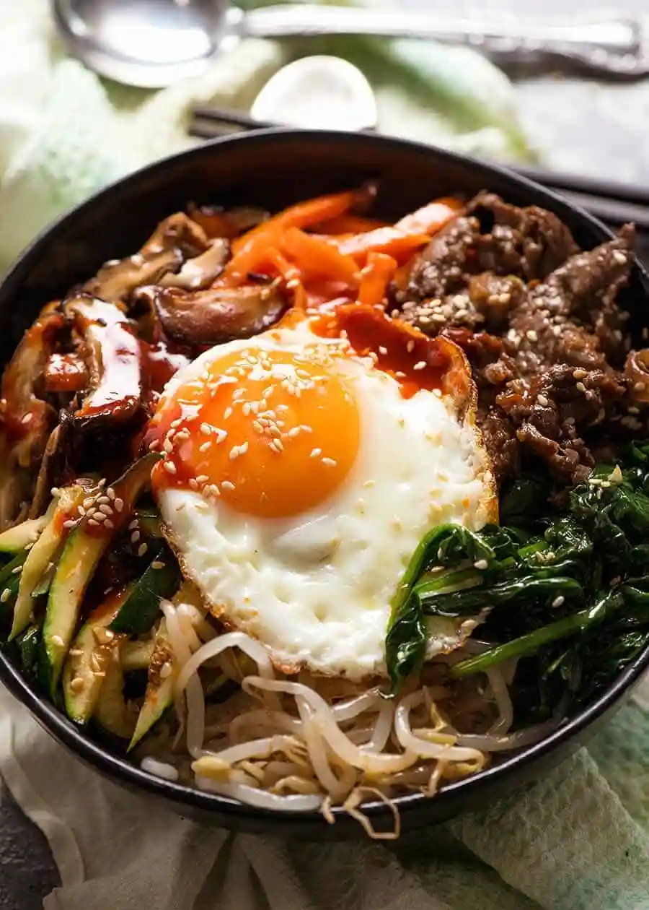

A Classic Bibimbap Recipe

Ingredients:
- 1 egg, at room temperature
- Protein of your choice (I used bulgogi!)
- Rice
- Sesame Seeds
- Olive oil
- Vegetables of your choice, can be anything! (zucchini, mushrooms, carrots, spinach, etc)
Ingredients for the sauce:
- 2 tbsp gochujang
- 1/2 tbsp rice vinegar
- 1tbsp soysauce
- 1 tbsp honey
- 1/2 tbsp sugar
- 1/2 tbsp minced garlic
- 1/2 tbsp sesame oil
Directions
- Wash and cut your vegetables into thin strips. Heat a pan
over medium heat with some olive oil. Stir fry the veggies individually
over high heat, for about 5 minutes. Set aside.
- Heat a pan over medium heat with some olive oil. Cook an egg, sunny side up.
- Put all sauce ingredients in a bowl and mix well.
- In a large bowl, place a bed of plain rice on the bottom.
Carefully place the vegetables on top. Cover the center with the fried egg, and
top with sesame seeds.
Return to Main